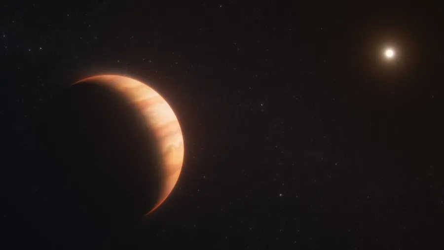

1. Juli 2026
WD 1856 b: Riesenplanet überdauert das Ende seines Sterns
Der jupitergroße Planet WD 1856 b umkreist einen Weißen Zwerg, den Überrest eines sonnenähnlichen Sterns, alle 34 Stunden in weniger als drei Millionen Kilometern Abstand. Das James-Webb-Weltraumteleskop beobachtete seinen Transit und bestimmte die Masse auf vier bis elf Jupitermassen. In der Atmosphäre fanden sich Anzeichen für Wolkenteilchen und Kohlenwasserstoffe, wahrscheinlich Methan.
Mit etwa 126 Grad Celsius ist der Planet wärmer, als das Licht des Weißen Zwergs erklärt. Die Forschenden schließen daraus, dass er die Rote-Riesen-Phase auf einer weiten Bahn überstand und erst Milliarden Jahre später nach innen wanderte. Das System ist rund 80 Lichtjahre entfernt.
Quelle: ESA/Webb: "Webb studies how a planet survived death of its star", 01.07.2026